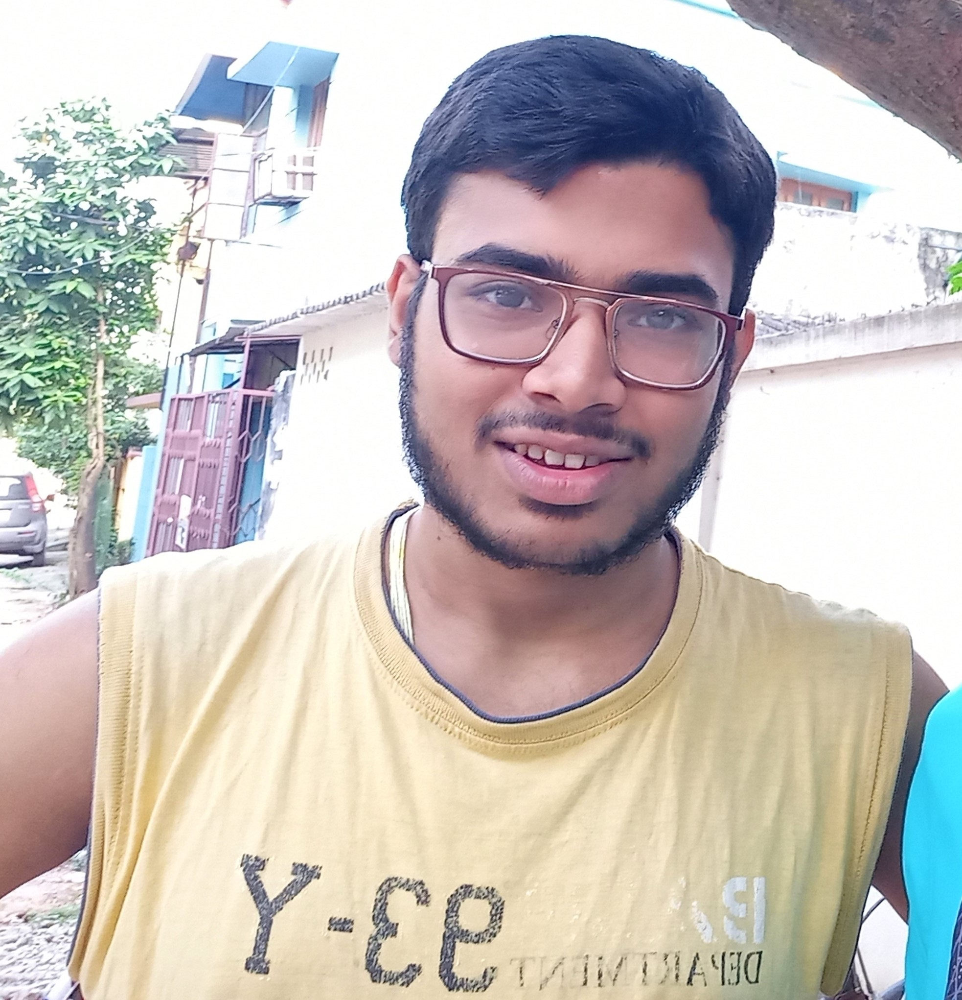

I have many friends, school friends, college friends, tution friends but I hangout with just a few ones i.e with 7 of my school friends only. so now I am going to introduce to that friend circle who kinda helped me during my project website making.
ABSHIEK BHATTA
We both were classmates since our nursery and we
ended our school life together at the same section also. He is
very supportive and funny he is very good listner and has a good
taste in tech.That's not it our friendship was not ended at school
it began a new phase at our college where we both are currently
studying at. He was the one who gave me the option to join ITER
otherwise I was searching for a govt. college. We both love computer and
codes. He till this day is very close to me and I like to share my stories
with him.
SAI NARAYAN PANDA
He is anothe school friend whom I met at a tution when I was studying
in class 6th. we became very good friends in tution and later started hanging
out at school during lunch hours. He was also with me till the end of school life and was
with me in my section from 9th onwards. Luckily he ended up at the very same
college where me and bhatta are studying...I feel like a magnet and these people are
not going to leave me in my future also. He is also caring and kind but rather than
wasting braincells in books and codes he wastes it in god only knows where. But
after all he is a valuable friend who doesn't need any verification from social media.
